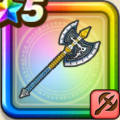

グレートアックス【錬】
攻略班 5.5点 / ホイミスカラステテコダンス
くわしい特徴
【レベル別習得スキル】 物理型呪文型補助型 Lv1スキルの斬撃・体技ダメージ+10% Lv1まじん斬り（消費MP：7）敵1体に30%の確率で斬撃ダメージの会心の一撃を与える。こころや心珠で会心率を上げても影響を受けない。 Lv1オノむそう（消費MP：20）周囲を粉砕して、敵全体に威力190％の斬撃ダメージを与える Lv1閃烈裂断（消費MP：30）敵全体に威力170%のギラ属性斬撃ダメージを与える Lv1じゅもんダメージ+10% Lv1ギラ（消費MP：8）小さな炎で敵全体にギラ属性の呪文微小ダメージを与える Lv1ヒャダルコ（消費MP：15）氷の刃で敵全体にヒャド属性の呪文小ダメージを与える Lv1ベギラマ（消費MP：14）はげしい炎で敵全体にギラ属性の呪文小 Lv1スキルHP回復効果+5% Lv1ホイミ（消費MP：5）仲間ひとりのHPを回復する Lv1スカラ（消費MP：11）使用時含む5ターンの間、味方ひとりの守備力を2段階上げる Lv1ステテコダンス（消費MP：18）敵全体をたまに踊りにさそう 【限界突破スキル】 1凸- 2凸- 3凸- 4凸-